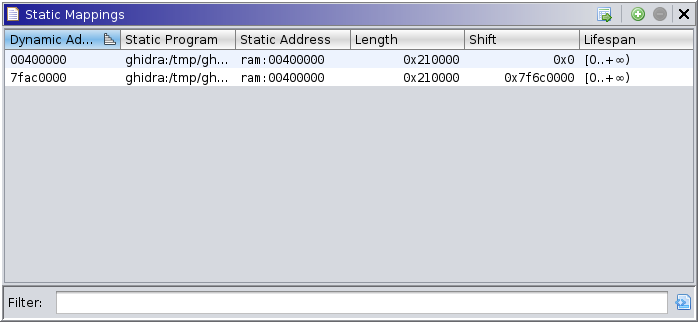

|  |
A static mapping refers to a range of addresses in the dynamic listing and its corresponding range in the static listing. These mappings provide a flexible means of mapping imported images, i.e., Ghidra Program Databases, into a trace. Typically, this table is populated by automation, e.g., the Map Modules bot, or by higher-level user actions, e.g., the Map Modules action. This under-the-hood static mapping window displays the mappings table, allowing users or developers to diagnose image mapping issues and manually add mappings, regardless of reported modules and/or sections. For most users, there is no reason to access this window.
The table has the following columns:
This window provides actions for finding, adding, and removing mappings. Note that entries cannot be modified.
This action is available when the active listing's (dynamic or static) cursor is at a valid location. It selects the mapping containing that cursor. If the active listing has a selection, it selects all mappings intersecting that selection.
This action is always available. It presents a dialog to manually add a mapping. When one primary listing (dynamic or static) has a selection, and the other's cursor is at a valid location, it will populate the dialog, using the selection's size and minimum address, and the cursor as the corresponding minimum address. The default lifespan is "from now on out", i.e., the current snap to infinity.
This action is available when at least one mapping is selected. It removes those mappings.